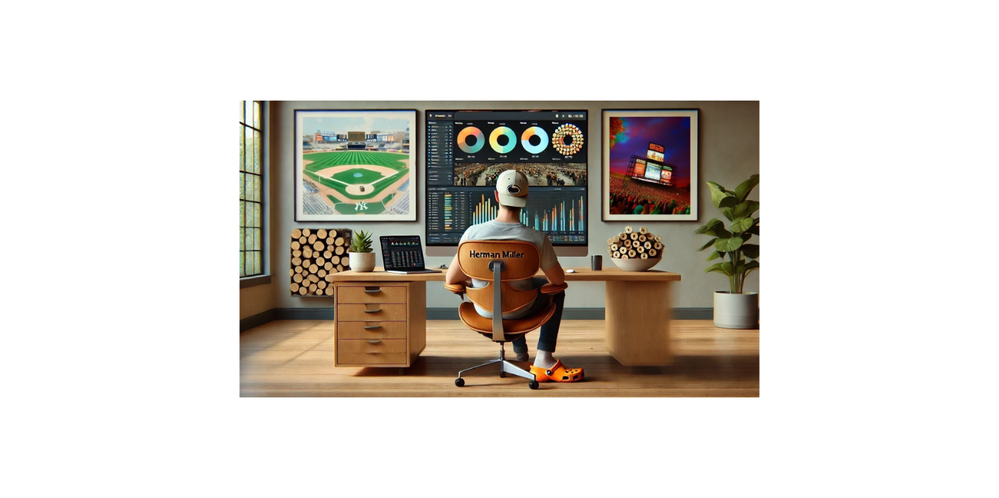
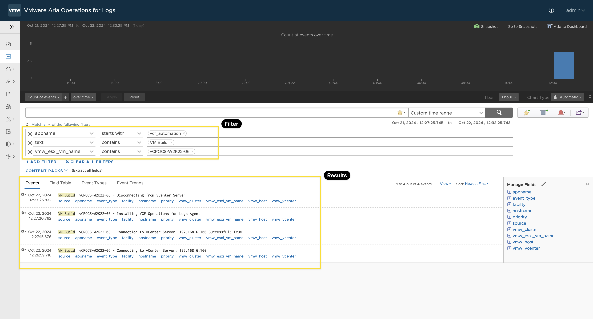
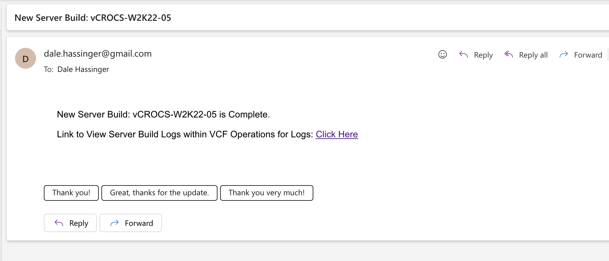
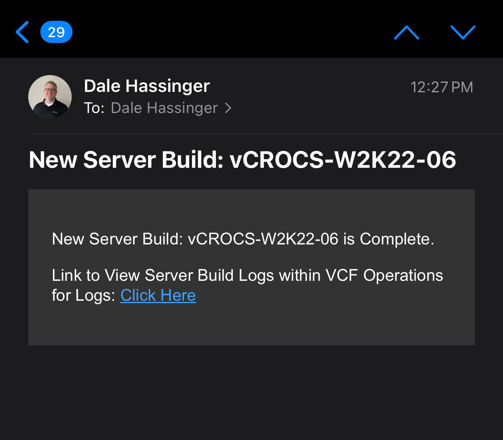

VCF Operations for Logs | How to Automate URL Generation for Filtering Results

How to Create a URL for Filtering Log Results and Share It with Others.
I have not failed. I’ve just found 10,000 ways that won’t work. – Thomas Edison
**Note: VCF Operations for Logs 8.18.0 was used to create this Blog**
In my previous blog, I focused on how to send log events to the VCF Operations for Logs API. Click here to read... In this blog, I’ll demonstrate how to generate a URL that connects to VCF Operations for Logs and automatically applies a filter based on the log events you’ve just sent.
When running an automation script, as shown in the example below, I want the results to be saved in VCF Operations for Logs. To make it easier for the person running the script to view the logged events, I’ve incorporated the generation of the VCF Operations for Logs URL directly into the automation script. When reviewing the VCF Operations for Logs URL format, I found that it wasn’t very human-readable.
Example URL to filter events for VCF Operations for Logs:
https://vaol.vcrocs.local/explorer/?existingChartQuery=%7B%22query%22%3A%22%22%2C%22startTimeMillis%22%3A1729528045745%2C%22endTimeMillis%22%3A1729614745743%2C%22piqlFunctionGroups%22%3A%5B%7B%22functions%22%3A%5B%7B%22label%22%3A%22Count%22%2C%22value%22%3A%22COUNT%22%2C%22requiresField%22%3Afalse%2C%22numericOnly%22%3Afalse%7D%5D%2C%22field%22%3Anull%7D%5D%2C%22dateFilterPreset%22%3A%22CUSTOM%22%2C%22shouldGroupByTime%22%3Atrue%2C%22includeAllContentPackFields%22%3Atrue%2C%22eventSortOrder%22%3A%22DESC%22%2C%22summarySortOrder%22%3A%22DESC%22%2C%22compareQueryOrderBy%22%3A%22TREND%22%2C%22compareQuerySortOrder%22%3A%22DESC%22%2C%22compareQueryOptions%22%3Anull%2C%22messageViewType%22%3A%22EVENTS%22%2C%22constraintToggle%22%3A%22ALL%22%2C%22piqlFunction%22%3A%7B%22label%22%3A%22Count%22%2C%22value%22%3A%22COUNT%22%2C%22requiresField%22%3Afalse%2C%22numericOnly%22%3Afalse%7D%2C%22piqlFunctionField%22%3Anull%2C%22fieldConstraints%22%3A%5B%7B%22internalName%22%3A%22appname%22%2C%22operator%22%3A%22STARTS_WITH%22%2C%22value%22%3A%22vcf_automation%22%7D%2C%7B%22internalName%22%3A%22text%22%2C%22operator%22%3A%22CONTAINS%22%2C%22value%22%3A%22VM%20Build%3A%22%7D%2C%7B%22internalName%22%3A%22vmw_esxi_vm_name%22%2C%22operator%22%3A%22CONTAINS%22%2C%22value%22%3A%22vCROCS-W2K22-06%22%7D%5D%2C%22supplementalConstraints%22%3A%5B%5D%2C%22groupByFields%22%3A%5B%5D%2C%22contentPacksToIncludeFields%22%3A%5B%5D%2C%22extractedFields%22%3A%5B%5D%7D&chartOptions=%7B%22logaxis%22%3Afalse%2C%22trendline%22%3Afalse%2C%22spline%22%3Afalse%7D
To simplify the generation of the VCF Operations for Logs URL that includes a filter, I created a function that accepts parameters for the required filter items. In my example, I’m embedding the generated URL in an email, making it easy to click and have VCF Operations for Logs open directly to your filtered data. I love Automation!
Example Code:
(3) Functions:
- Function to Send event logs to VCF Operations for Logs API
- Function to generate the VCF Operations for Logs URL
- Function to send the email with the link in the email body
# Function to send event data to Aria Operations for Logs function Send-ApiEvent { Param ( # Parameters with default values, can be overridden as needed. [string]$Uri = 'https://vaol-vip.vcrocs.local:9543/api/v2/events', # API Endpoint to send the event data [string]$priority = 'info', # Event priority (info, warning, error, etc.) [string]$facility = 'user', # Source generating the event (user, system, etc.) [string]$appname = 'VCF_Automation', # Application name logging the event [string]$hostname = 'NA', # Hostname of the system (optional) [string]$vmw_esxi_vm_name = 'NA', # Name of the VM or ESXi host (optional) [string]$vmw_vcenter = 'NA', # Name of the vCenter (optional) [string]$vmw_cluster = 'NA', # Name of the vCenter cluster (optional) [string]$vmw_host = 'NA', # Name of the vCenter Host (optional) [string]$Text = "Custom Script execution" # Custom text describing the event ) # End Param # Define headers for the REST API call, using JSON for content type and response format. $headers = @{ 'accept' = 'application/json' 'Content-Type' = 'application/json' } # End headers # Construct the JSON body for the API request using a here-string. $body = @" [ { "priority": "$priority", "facility": "$facility", "appname": "$appname", "hostname": "$hostname", "vmw_esxi_vm_name": "$vmw_esxi_vm_name", "vmw_vcenter": "$vmw_vcenter", "vmw_cluster": "$vmw_cluster", "vmw_host": "$vmw_host", "text": "$Text" } ] "@ # End Body # Send the POST request to the API endpoint within a try-catch block for error handling. try { # Invoke-RestMethod is used to send the API request and return the response. $response = Invoke-RestMethod -Uri $Uri -Method Post -Headers $headers -Body $body -SkipCertificateCheck # Output the API response if successful. Write-Host "API response: " -ForegroundColor Green $response } catch { # Handle any errors that occur during the request and output the error message. Write-Host "Error occurred: $($_.Exception.Message)" -ForegroundColor Red } # End try/catch } # Function End # Example usage of the Send-ApiEvent function. # Customize the message text, add relevant data to $text, and invoke the function. #$text = "VM Build: " + "A new process has been created with ID 9876" #Send-ApiEvent -Text $text -vmw_esxi_vm_name 'vCROCS-W2K22-02' # Email Function using Gmail function Send-ServerBuildEmail { param ( [string]$fromEmail = "dale.hassinger@gmail.com", [string]$toEmail = "dale.hassinger@vcrocs.info", [string]$vmName, [string]$finalUrl ) # Gmail email settings $appPassword = "klj-Hack-Me-ytl" $smtpServer = "smtp.gmail.com" $smtpPort = 587 # Email subject $subject = "New Server Build: $vmName" # Build the Email body $body = '<!DOCTYPE html><html><head><meta charset="UTF-8"><title>vCROCS Automation</title> <style> body { background-color: #ffffff; color: #000000; font-family: Arial, sans-serif; font-size: 14px; margin: 0; padding: 20px; } </style></head><body>' $body += '<body><p>New Server Build: ' + $vmName + ' is Complete.</p>' $body += '<p>Link to View Server Build Logs within VCF Operations for Logs: <a href="' + $finalUrl + '">Click Here</a></p>' $body += '</body></html>' # Create the email message $emailMessage = New-Object system.net.mail.mailmessage $emailMessage.From = $fromEmail $emailMessage.To.Add($toEmail) $emailMessage.Subject = $subject $emailMessage.Body = $body $emailMessage.IsBodyHtml = $true # Set to true to send HTML emails # Configure the SMTP client $smtpClient = New-Object system.net.mail.smtpclient($smtpServer, $smtpPort) $smtpClient.EnableSsl = $true # Gmail requires SSL $smtpClient.Credentials = New-Object System.Net.NetworkCredential($fromEmail, $appPassword) # Send the email try { $smtpClient.Send($emailMessage) Write-Host "Email sent successfully." } catch { Write-Host "Failed to send email: $_" } # Clean up $smtpClient.Dispose() } # Example usage of the email function #Send-ServerBuildEmail -toEmail "dale.hassinger@vcrocs.info" -vmName "vcrocs-w2k22-02" -finalUrl $Global:finalUrl # Function to build URL for VCF Operations for Logs that will auto filter logs based on date|time, VM Name and text function set-filterURL { param ( [string]$appname = "vcf_automation", [string]$text = "VM Build:", [string]$vmwEsxiVmName = "vcrocs-w2k22-01" ) # End Param # ----- [ Get current time and 24 hours ago ] ----- # Get the current date and time, add 5 minutes $currentDate = (Get-Date).AddMinutes(5) # Calculate the date and time 24 hours ago $pastDate = (Get-Date).AddHours(-24) # Convert both dates to Unix timestamps in milliseconds $epoch = [datetime]"1970-01-01 00:00:00" # Convert the current date to a Unix timestamp in milliseconds $currentTimestampMillis = [int64](($currentDate.ToUniversalTime() - $epoch).TotalMilliseconds) # Convert the past date (24 hours ago) to a Unix timestamp in milliseconds $pastTimestampMillis = [int64](($pastDate.ToUniversalTime() - $epoch).TotalMilliseconds) # Output the results #"Current time in milliseconds: $currentTimestampMillis" #"24 hours ago in milliseconds: $pastTimestampMillis" # Define the base URL $baseUrl = "https://192.168.6.97/explorer/?existingChartQuery=" # Define the JSON object with placeholders for the parameters $jsonObject = @{ query = "" startTimeMillis = $pastTimestampMillis endTimeMillis = $currentTimestampMillis piqlFunctionGroups = @( @{ functions = @( @{ label = "Count" value = "COUNT" requiresField = $false numericOnly = $false } ) field = $null } ) dateFilterPreset = "LAST_24_HOURS" shouldGroupByTime = $true includeAllContentPackFields = $true eventSortOrder = "DESC" summarySortOrder = "DESC" compareQueryOrderBy = "TREND" compareQuerySortOrder = "DESC" compareQueryOptions = $null messageViewType = "EVENTS" constraintToggle = "ALL" piqlFunction = @{ label = "Count" value = "COUNT" requiresField = $false numericOnly = $false } piqlFunctionField = $null fieldConstraints = @( @{ internalName = "appname" operator = "STARTS_WITH" value = $appname }, @{ internalName = "text" operator = "CONTAINS" value = $text }, @{ internalName = "vmw_esxi_vm_name" operator = "CONTAINS" value = $vmwEsxiVmName } ) supplementalConstraints = @() groupByFields = @() contentPacksToIncludeFields = @() extractedFields = @() } # Convert the object to JSON $jsonString = $jsonObject | ConvertTo-Json -Compress -Depth 10 # URL encode the JSON string $encodedJson = [System.Web.HttpUtility]::UrlEncode($jsonString) # Chart options (URL encoded) $chartOptions = "%7B%22logaxis%22%3Afalse%2C%22trendline%22%3Afalse%2C%22spline%22%3Afalse%7D" # Construct the final URL $global:finalUrl = $baseUrl + $encodedJson + "&chartOptions=" + $chartOptions # Output the final URL #$global:finalUrl Set-Clipboard $global:finalUrl } # End Function # Call Function to build Filter URL Example #$vmName = "vcrocs-w2k22-02" #set-filterURL -vmwEsxiVmName $vmName # Open URL in default browser #Start-Process $global:finalUrl
Automation Script Example:
- Shows how to use the (3) Functions in the example code above
# Load the Create Events, Create URL and Send Email functions script, which will be used for logging events via Aria Operations for Logs API. . /Path-to-Script/aria-operations-for-logs-syslog-api.ps1 # Define the VM name and the script process description $vmName = "vCROCS-W2K22-06" $scriptProcess = "VM Build: " + $vmName # --- Connect to vCenter --- # Define the parameters for connecting to the vCenter Server $ConnectVIServerParams = @{ Server = '192.168.6.100' # vCenter Server IP or FQDN User = 'administrator@vcrocs.local' # vCenter Admin Username Password = 'VMware1!' # vCenter Admin Password Protocol = 'https' # Secure Protocol Force = $true # Force connection even if already connected } # Log the connection attempt to Aria Operations for Logs $text = $scriptProcess + " - Connecting to vCenter Server: " + $ConnectVIServerParams.Server Send-ApiEvent -text $text -vmw_vcenter $ConnectVIServerParams.Server -vmw_esxi_vm_name $vmName # Establish the connection to vCenter $vCenterConnect = Connect-VIServer @ConnectVIServerParams # Log successful connection status to Aria Operations for Logs $text = $scriptProcess + " - Connection to vCenter Server: " + $ConnectVIServerParams.Server + " Successful: " + $vCenterConnect.IsConnected Send-ApiEvent -text $text -vmw_vcenter $ConnectVIServerParams.Server -vmw_esxi_vm_name $vmName # --- Add Your VM Build Steps Here --- # Insert your VM build process code below. This section is a placeholder for any actions you will take on the VM during the build. # Example Log Event - Add specific operations during VM build (e.g., software installation, configuration, etc.) $text = $scriptProcess + " - Installing VCF Operations for Logs Agent" Send-ApiEvent -text $text -vmw_vcenter $ConnectVIServerParams.Server -vmw_esxi_vm_name $vmName # --- Disconnect from vCenter --- # Log the disconnection attempt from vCenter $text = $scriptProcess + " - Disconnecting from vCenter Server" Send-ApiEvent -text $text -vmw_vcenter $ConnectVIServerParams.Server -vmw_esxi_vm_name $vmName # Disconnect from the vCenter Server without confirmation prompts Disconnect-VIServer -Server $ConnectVIServerParams.Server -Confirm:$false # Call Function to build Filter URL set-filterURL -vmwEsxiVmName $vmName # Example usage of the email function Send-ServerBuildEmail -toEmail "dale.hassinger@vcrocs.info" -vmName $vmName -finalUrl $Global:finalUrl
Screen Shots:
Screen Shot of the VCF Operations for Logs - Filter query and results:
Screen Shot of the Email with a VCF Operations Log link included:

Screen Shot of the Email on a mobile device with a VCF Operations Log link included:

Lessons Learned:
- VCF Operations for Logs is an excellent syslog solution, offering intuitive and user-friendly filtering tools.
- Always format events in a way that simplifies the creation of filters.
- Generating the VCF Operations Log URL link makes filtering and viewing events very easy.
Links to resources discussed is this Blog Post:
I created a Google NotebookLM Podcast based on the content of this blog. While it may not be entirely accurate, is any podcast ever 100% perfect, even when real people are speaking? Take a moment to listen and share your thoughts with me!
vCROCS Deep Dive Podcast | VCF Operations for Logs | How to create URL for Filtering Results
In my blogs, I often emphasize that there are multiple methods to achieve the same objective. This article presents just one of the many ways you can tackle this task. I've shared what I believe to be an effective approach for this particular use case, but keep in mind that every organization and environment varies. There's no definitive right or wrong way to accomplish the tasks discussed in this article.
Always test new setups and processes, like those discussed in this blog, in a lab environment before implementing them in a production environment.